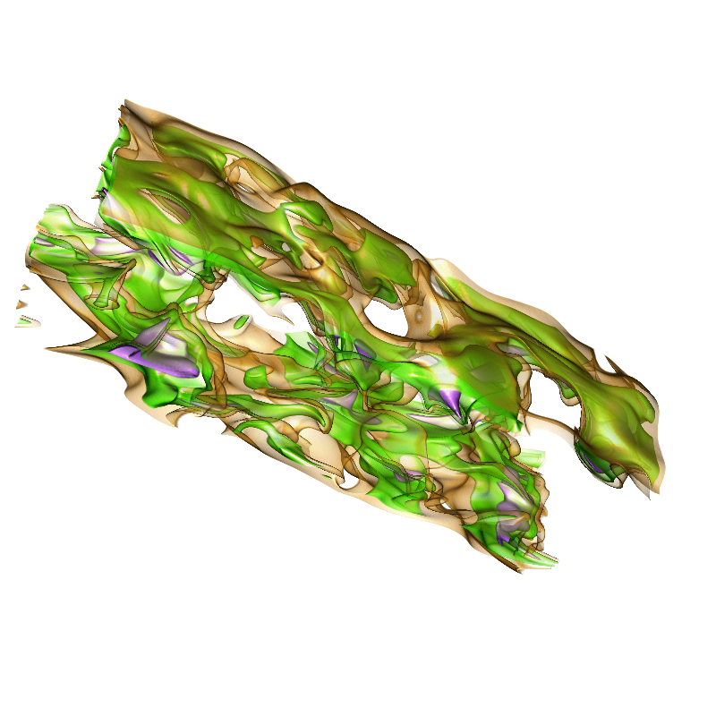
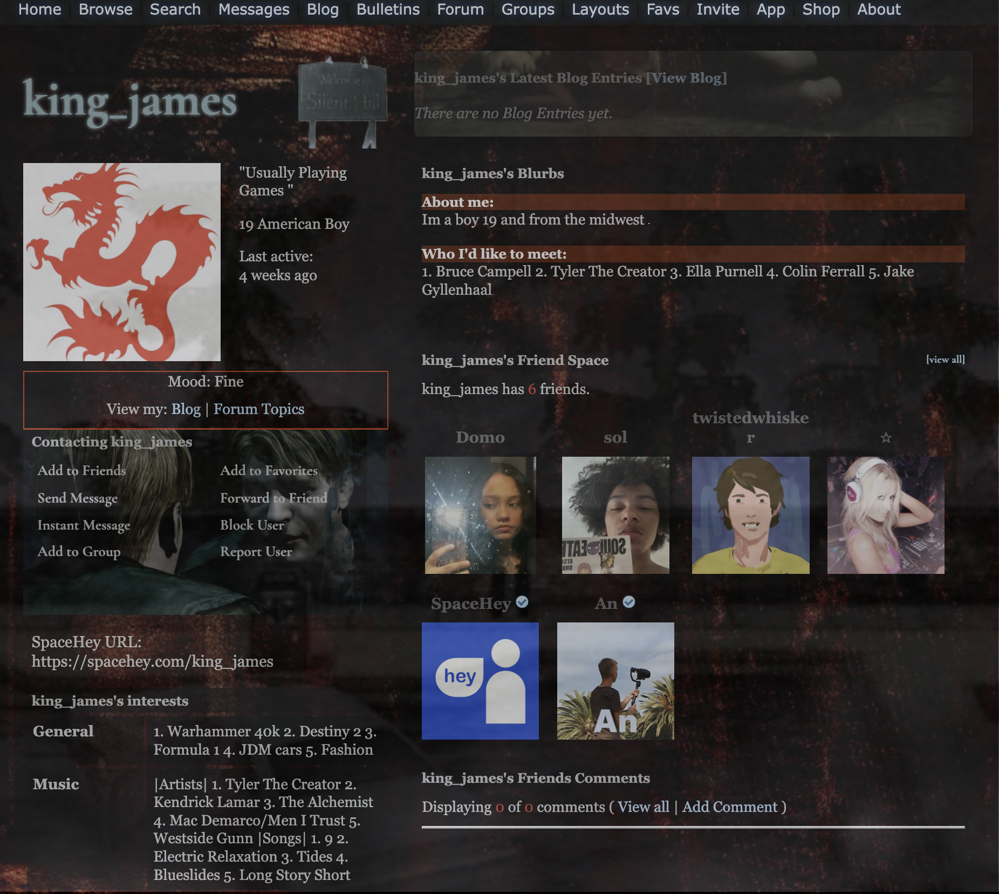

Projects
Guitar Chord Detector
I'm a huge lover of indie rock music and I've been trying for forever to get really good at the guitar. Unfortunately despite how much I love it I'm just not very talented in it. Despite playing for years I'm still not one of those people who can just listen to a song and find out how to play it. I depend heavily on annotated chord sheets to learn songs. However, a lot of songs I listen to aren't very popular and don't have these annotated sheets. So I wanted to build a program that can generate it for me just by inputting an audio file (mp3). So I built a python project that converted these MP3 files into a chromogram which I then used to identify the chords! Feel free to download it and try to use it! Here's a picture of the output you can expect to get!

3D Gaussian Splatting - Fisher Information
I'm currently working on a research project that explores how Fisher Information can be
used to enhance the speed and quality of 3D Gaussian Splatting! Gaussian Splatting
is a super cool new technique for real-time rendering of 3D scenes, but it can be extremely
computationally heavy and sometimes struggles with preserving fine details efficiently. My approach
tries to use Fisher Information to guide where computational resources are allocated during optimization,
essentially trying to redirect focus onto the most informative regions of the scene. In doing so,
I hope to achieve faster convergence and produce sharper, higher-quality reconstructions with
fewer splats!
This project is still in progress, but I'm aiming to publish the results as part of an academic
paper. Stay tuned!
Here is a sample of an object we recreated! - - ->

Personal Website
I've always been inspired by the MySpace era blogs people had, having just missed the
boat on that. So I decided to take a stab at recreating that style using pure HTML, CSS,
and JavaScript! It's been a really fun learning experience and I hope to continue adding
more fun stuff as time goes!
(Some inspiration from this really cool website called SpaceHey) - - ->

You can find all these projects on my GitHub below!


Dao Wei Lim
About Me:
Hey I'm a current computer science student at Notre Dame! Welcome to my own MySpace inspired blog! I'm having lots of fun building my own projects on the way to (hopefully) becoming a full stack software engineer. Take a look around! :)
Interests:
Professional
Personal
Change in script.js
Title
Artist
0:00
0:00